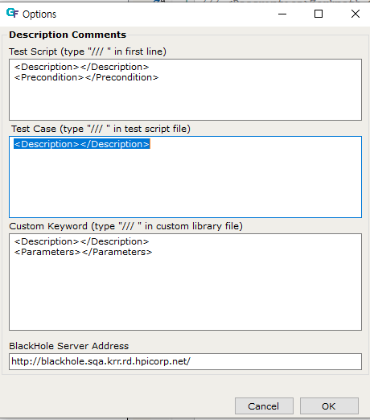
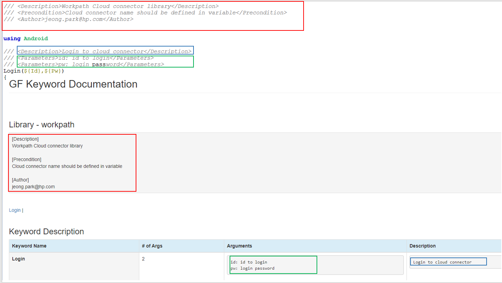

This section describes documentation guide for custom library, but it also can be applied for test script and test cases.
Goto Tool-Options in GFriend menu, you can set template that will be used for describing Test Script or Custom library file (Test Script section), Test case (Test Case section) and Custom Keyword(Custom Keyword section.) GFriend suggest to use descriptions in format of XML so that you can use these values laster.

If you type "/// " (Three slashes and space) in the first line of file, template from Test Script section will be automatically inserted. Note that scrip/custom library file description MUST be placed in the first line of file.
If you type "/// " in custom library file (Note that, to insert correctly you need to save file first with .gflib extension) template from Custom Keyword section will be inserted. You can insert this descriptions above every custom keyword name. (This behavior is almost same as Test cases in normal test script file.)
Well-documented custom library can be converted to keyword manual.

All information that you wrote in custom library description will be displayed in description section in keyword manual. (see Red box)
Inner text of XML node
You need to do nothing but by saving custom library file to generate keyword manual. Also GFriend will search in local script repository and generate keyword manual for all custom library in the local script repository. You can check this keyword manuals in Help-Keyword List in GFriend menubar.